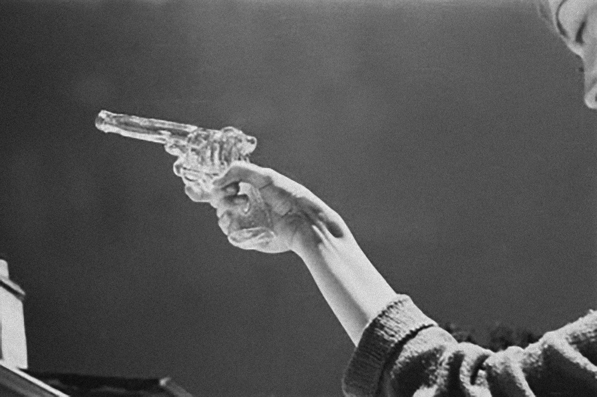
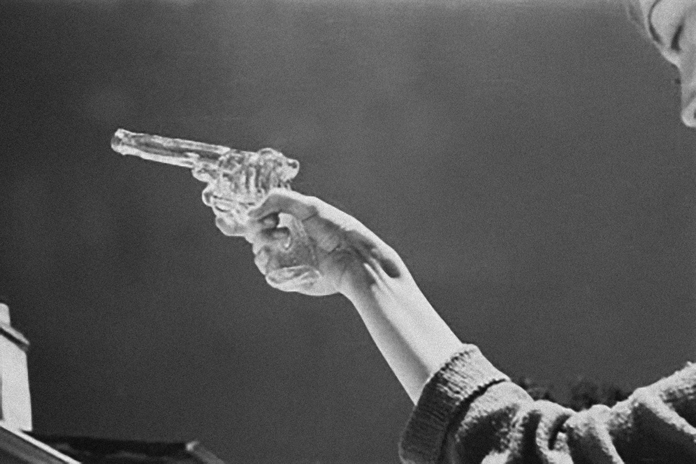

Trigger is a part of the choreographic project ARCIPELAGO/PRATICHE DI ABITAZIONE TEMPORANEA, actions built to be experienced in non-theatrical spaces.
So far, it took place in:
Firenze (Palazzo Pitti, 2015),
Beirut
(BIPOD|Festival, 2018),
Sarayyet Ramallah (Mahmoud Darwish Museum, 2018),
Singapore (M1
Contact Festival, 2018),
Seoul (New Dance For Asia, 2018),
Milano (Brera Museum,
2018),
Gerusalemme (The Karnaf Granovsky Hall, 2018),
Vilnius (MO Museum,
2019),
Ginevra (Adc Saison Danse, 2020).


 
